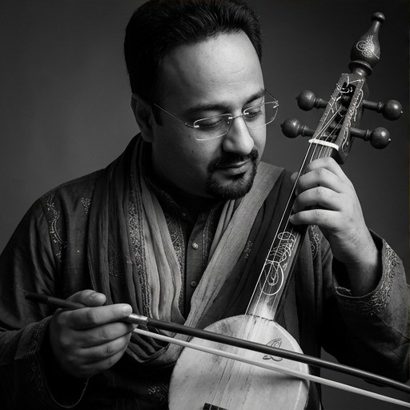
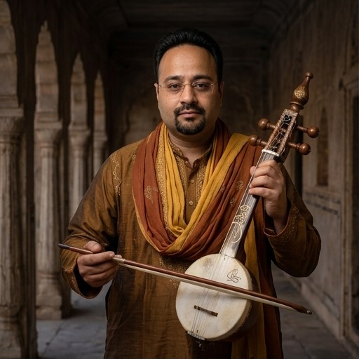
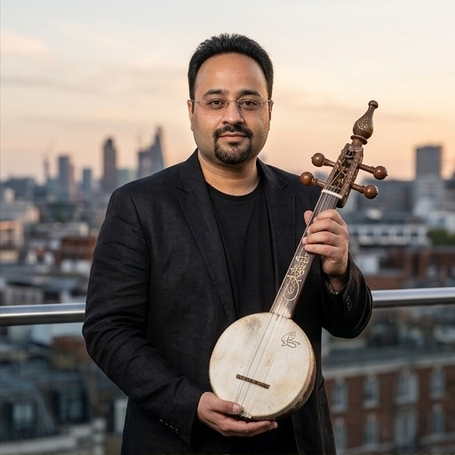

Press Release
"Dastakhat" turns the idea of a signature into a metaphor for life: every choice, struggle, relationship and act of courage becomes a stroke in the identity we leave behind. Rather than chasing recognition, the song looks inward — asking what makes a person's journey unmistakably theirs.
Rooted in Punjabi Sufi sensibility, the song carries an intimate, contemplative spirit while speaking to a contemporary audience navigating ambition, comparison, visibility and the pressure to prove oneself. The central thought is simple: your real signature is the life you live, not the image you present.
The accompanying visual language reinforces that idea through contrasting worlds — heritage and modernity, solitude and public space, tradition and the present day. The recurring bowed-string instrument becomes a visual and sonic symbol of continuity: an old voice carrying a very current question.
For curators, "Dastakhat" sits naturally between Punjabi Sufi, contemporary folk, spiritual/reflective music and independent Indian singer-songwriter programming. It is designed for listeners who connect with songs that carry an idea, not only a hook.
About Hartaaj Music
Hartaaj Music is an independent Punjabi Sufi artist and self-releasing producer, writing and putting out original music without label backing or a booking agency behind it. That independence shapes the work itself: songs built around an idea worth sitting with, rather than a release schedule built around trends.
"Apna Dastakhat" is written and directed entirely in-house — original Punjabi lyrics and creative direction by Hartaaj Music, produced with AI-assisted composition (Suno) and finished with hands-on human editing and mixing. It is shared here as an independent artist's release, seeking the same curatorial consideration as any other emerging voice in the Punjabi Sufi and contemporary folk space.
Lyrical World
The lyric concept revolves around identity, purpose, self-respect, authenticity and legacy. Its "dastakhat" is not a literal signature; it is the personal imprint created through choices and character. The emotional movement is from external validation toward inner certainty.
Editorial note: the public YouTube page confirms the title, artist and stated theme of purpose, identity and legacy, but did not expose a searchable lyric transcript. This EPK intentionally avoids invented or misquoted lyrics. Exact lyric pull-quotes can be inserted from the approved lyric sheet/transcript.
ਹਰ ਰੂਹ ਨਾਲ ਇੱਕ ਦਸਤਖ਼ਤ।
ਲੋਕ ਉਮਰ ਭਰ ਪਛਾਣ ਬਣਾਉਂਦੇ,
ਕੁਝ ਚੁੱਪ ਰਹਿ ਕੇ ਇਤਿਹਾਸ ਲਿਖਦੇ।
ਜੋ ਤੈਨੂੰ ਮਿਲਿਆ,
ਉਹ ਕਿਸੇ ਹੋਰ ਨੂੰ ਨਹੀਂ ਮਿਲਿਆ।
ਇਹੀ ਤੇਰੀ ਦੌਲਤ ਏ।
Har rooh naal ikk dastakhat.
Lok umar bhar pehchaan banaaunde,
Kujh chupp reh ke itihaas likhde.
Jo tainu milya,
Oh kise hor nu nahin milya.
Ehi teri daulat ae.
ਵਕ਼ਤ ਨੇ ਅਰਥ।
ਹਾਰਾਂ ਨੇ ਲਹਿਜ਼ਾ ਦਿੱਤਾ,
ਚੁੱਪ ਨੇ ਵਜ਼ਨ।
ਹੁਣ ਜਦ ਤੂੰ ਬੋਲੇਂ,
ਲੋਕ ਸ਼ਬਦ ਨਾ ਸੁਣਣ—
ਉਹ ਆਪਣਾ ਅਕਸ ਵੇਖਣ।
Waqt ne arth.
Haaraan ne lehza ditta,
Chupp ne wazan.
Hun jad tu bolen,
Lok shabad na sunan —
Oh apna aks vekhan.
ਐਲਾਨ ਨਹੀਂ ਕਰਦੀਆਂ।
ਉਹ
ਕਦਮਾਂ ਦੀ ਭਾਸ਼ਾ ਸਮਝਦੀਆਂ ਨੇ।
Ailaan nahin kardiyan.
Oh
Kadmaan di bhaasha samajhdiyan ne.
ਵੇਲੇ ਉੱਤੇ ਕਰ।
ਭੀੜ ਵਿੱਚ ਨਾਮ ਨਹੀਂ,
ਨਿਸ਼ਾਨ ਛੱਡ।
ਜੋ ਤੇਰੇ ਅੰਦਰ
ਅਜੇ ਤੱਕ ਅਣਕਿਹਾ ਏ,
ਸ਼ਾਇਦ
ਉਹੀ ਕਿਸੇ ਹੋਰ ਦੀ
ਉਡੀਕ ਬਣਿਆ ਹੋਵੇ।
Vele utte kar.
Bheed vich naam nahin,
Nishaan chhadd.
Jo tere andar
Aje takk ankheha ae,
Shayad
Ohi kise hor di
Udeek baniya hove.
ਕਲਾ ਦਾ ਜਨਮ ਨਹੀਂ ਹੁੰਦੀ।
ਜਿਸ ਦਿਨ
ਤੂੰ ਆਪਣੇ ਮਿਆਰ ਦਾ ਹੋ ਗਿਆ,
ਉਸ ਦਿਨ
ਦੁਨੀਆ ਦੀ ਰਾਏ
ਛੋਟੀ ਪੈ ਗਈ।
Kala da janam nahin hundi.
Jis din
Tu apne miyaar da ho gaya,
Us din
Duniya di raaye
Chhoti pai gayi.
ਕੁਝ ਲਿਖਣ ਲਈ ਵੀ ਮਿਲਦੇ ਨੇ।
ਆਵਾਜ਼ ਸਿਰਫ਼ ਬੋਲਣ ਲਈ ਨਹੀਂ।
ਕਿਸੇ ਅਣਜਾਣ ਦਿਲ ਵਿੱਚ ਥਾਂ ਬਣਾਉਣ ਲਈ ਮਿਲਦੀ ਏ।
ਆਪਣਾ ਦਸਤਖ਼ਤ ਵੇਲੇ ਉੱਤੇ ਕਰ।
ਫਿਰ ਤੇਰੀ ਖ਼ਾਮੋਸ਼ੀ ਵੀ ਪਛਾਣ ਬਣ ਜਾਵੇਗੀ।
Kujh likhan lai vi milde ne.
Awaaz sirf bolan lai nahin.
Kise anjaan dil vich thaan banaun lai mildi ae.
Apna dastakhat vele utte kar.
Fir teri khaamoshi vi pehchaan ban jaavegi.
Visual & Artist Identity
The image direction presents the artist as a modern Punjabi Sufi storyteller rather than a conventional pop persona: introspective, joyful, dramatic and serene. The imagery supports heritage, performance and contemporary editorial contexts.




Full editorial photo sheet — including serene and archival heritage frames — available on request.
Curator / Editor Pitch
"Apna Dastakhat" is a contemporary Punjabi Sufi song built around a timeless idea: what we leave behind is shaped by how authentically we live. Hartaaj Music brings that thought into a modern independent music setting, using Sufi-inflected writing and an earthy bowed-string palette to explore purpose, identity and legacy without turning the message into a sermon. It is reflective, rooted and emotionally accessible — a strong fit for discovery playlists, culture-led programming and editorial stories around meaningful Indian music.